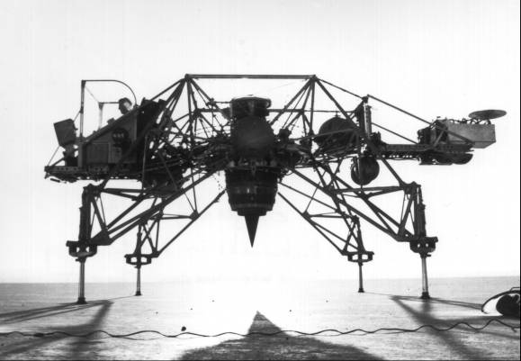

Since responsibility for the Apollo command and service modules already rested with Gilruth's Manned Spacecraft Center, NASA assigned Houston to procure and manage the lunar excursion vehicle. NASA officials decided to hire a separate contractor to develop the lunar landing spacecraft.
North American had made a strong bid for the lander when the lunar travel mode became a hot issue. Although the company was sent a request for proposals in July 1962, it was first discouraged, and then precluded, from bidding on this contract. NASA evidently believed that North American already had all the Apollo development work it could handle.59
Facing the loss of the glamor associated with landing its own craft on the moon, North American did not give up gracefully. Harrison Storms carried his case to Administrator Webb, suggesting that his company be selected as sole source contractor for the lander, farming out most of the actual hardware work. This arrangement would have made North American the systems manager, responsible for integrating all the payload vehicles. Legal and procurement officers within NASA warned Webb against this approach. The agency should contract the lander directly, they urged. To permit an industrial firm to take over this task without competition, even though NASA would have the final approval of the selection of the subcontractors, "might be regarded as a delegation of NASA's inherent responsibility to perform its procurement function."60
Requests for proposals on the lander were issued on 25 July 1962, and a bidders' briefing was held in Houston on 2 August. On 5 September, barely five weeks after the issuance, NASA announced that nine companies had submitted proposals and that the agency planned to award the contract in six to eight weeks. Of the 11 companies originally invited to bid, only McDonnell - and North American - had not submitted proposals.
Evaluations began at Houston immediately after the proposals were received and they ended on 28 September. At Ellington Air Force Base in mid-September, company officials made formal presentations to the Source Evaluation Board and a number of technical management panels. NASA teams then made one-day visits to the company plants, to see what facilities each bidder could draw upon to support the development program.61 Early in October, officials from Houston presented their findings and recommendations to NASA Headquarters. Holmes wanted the selection completed, approved, and announced by the middle of the month. But the last-minute demands by PSAC postponed the contract award for three weeks. On 7 November, NASA formally announced that the Grumman Aircraft Engineering Corporation of Bethpage, New York, would build the excursion module.62
Several bidders had been very close, both technically and managerially, William Rector later said. Any of them could have done the job - "Grumman didn't turn in the only good design." A major factor in Grumman's selection had been its facilities: spacious engineering design and office accommodations, ample manufacturing space, and a clean-room complex for vehicle assembly and testing.
The Manned Spacecraft Center continued its studies, even after the requests had been issued. Rector remembered that "our designs were really beginning to take shape. . . . We were getting a much better feel for what we wanted this thing to look like." The Apollo Spacecraft Project Office had been realigned on 1 August, to give the lunar module an organization of its own. Rector became project officer for the lander and Thomas Markley for the command and service modules. Rector and Markley then revised the North American statement of work to reflect Grumman's and the lunar module's place in the Apollo-Saturn stack, particularly in the arrangements for docking and for stowage within a protective adapter section.
Rector's office began defining the lander's subsystems: propulsion, guidance and control, reaction control, electrical power, and instrumentation. The planners hoped to use Mercury and Gemini spacecraft components as well as Apollo command and service module parts ("common usage" equipment in the new vehicle. The guidance and navigation system in the command module received the closest initial scrutiny for common usage parts. MIT studies indicated that the inertial measurement unit, the telescope, and some computers and displays might be modified for the lander.63
Numerous lunar-module-related design problems were examined during the last weeks of 1962. Among the most pressing were requirements for rendezvous and landing radar (and where to put the equipment); analyses of individual vehicle systems, such as electrical power and thermal control; considerations of mission trajectory from lunar orbit and back and of abort trajectories from any point during the descent; projections of overall costs for developing the vehicle; and questions of dust layers on the moon, the blast effect caused by descent engine exhaust, and the influence of these factors on both vehicle design and landing site selection. During this time, NASA decided that the lander's propulsion systems would be tested at White Sands in facilities similar to those being developed at Sacramento for testing the service module's main engine.64 Apollo leaders also expected to flight-test the lunar module in New Mexico, using the Little Joe II booster.
Simulating lunar landings to train the crews would require ingenuity; imitating one-sixth g within the earth's gravitational field is complex and difficult. Three methods were considered, the simplest being a fixed-base simulator like those built for the Mercury and Gemini programs. More complicated were plans for tethered flights of a model of the lunar lander at Langley on a huge A-frame structure that used cables and rigging to relieve the descent engine of most of the vehicle's weight.

The Bell Aerospace lunar landing research vehicle, manufactured for NASA as a trainer for the moon landing, was frequently referred to by the news media and others as the "flying bedstead."
The third method, which would simulate in free flight the actual landing on the moon, employed a unique and specially fitted flying machine called the lunar landing research vehicle. Dubbed the "flying bedstead" or "pipe rack," this was a complex combination of rocket motors and a vertical jet engine designed to accustom the astronauts to flying in the lower gravity of the moon. Work on the vehicle, based on concepts proposed by Bell Aerosystems, had already begun at NASA's Flight Research Center at Edwards Air Force Base in California. After awarding a contract to Bell in January 1962, that center solicited support from Houston in designing, building, and flying the craft. Paul F. Bikle, Director of the Flight Research Center, insisted that close contact with the builders of the lunar module during the designing of the hover craft was essential to make certain the handling characteristics of the moon lander were accurately represented.65
59. Seamans memo for file, "Apollo Procurement," 2 June 1961; Rector and Seamans interviews.
60. Ernest W. Brackett to Seamans, "Comments on North American Suggestion for Lunar-Excursion Contract," 18 July 1962.
61. Bothmer, minutes of OMSF Staff Meeting, 3 Aug. 1962; "Apollo Chronology," MSC Fact Sheet, p. 26; Ivan D. Ertel and Mary Louise Morse, The Apollo Spacecraft: A Chronology, vol. 1, Through November 7, 1962, NASA SP-4009 (Washington, 1969), p.130; ASPO activity reports, 2-8 Sept., p. 2, and 23-29 Sept. 1962, p. 2; Rector interview; Dave W. Lang, interview, Houston, 18 Nov. 1962.
62. Robert G. Ferris, minutes of OMSF Staff Meeting, 28 Sept. 1962; Bothmer, minutes of OMSF Staff Meeting, 5 Oct. 1962; Donald T. Gregory, recorder, minutes of MSC Senior Staff Meeting, 12 Oct. 1962, p. 2; William M. Allen to Webb, 12 Sept. 1962; NASA TWX, "Grumman Selected to Build LEM."
63. Rector and Lang interviews; Saul Ferdman, interview, Bethpage, N.Y., 2 May 1966; Frick memo, "Appointment of Project Officers, Apollo Spacecraft Office," 31 July 1962, with enc., "Duties of the Project Officer"; "Markley, Rector Appointed Apollo Project Heads," MSC Space News Roundup, 22 Aug. 1962; MSC, "Project Apollo Spacecraft Development: Statement of Work," pt. 3, "Technical Approach," 18 Dec. 1961, rev. 14 Aug. 1962; Project Apollo Quarterly Status Report No. 1, for period ending 30 Sept. 1962, pp. 25-30; Hubert P. Davis to Clinton L. Taylor, "LEM Common Usage Components," 31 Oct. 1962; Cohen to Rector, "C/M and LEM G&N systems interface," 27 Aug. 1962; Paul E. Ebersole and George Burrill to LEM Project Officer, "LEM Control and Stabilization System Common Usage Parts," 29 Oct. 1962; Cohen interview.
64. MSC, abstract of Proceedings, Guidance and Control Systems Meeting No. 5, 16 Aug. 1962; C. Dale Haines and J. T. Taylor, "Considerations toward the Selection of Electrical Power Systems and Thermal Control Systems for the Lunar Excursion Module," working paper No. 1055, MSC, 18 Dec. 1962; Charles W. Frick, "Some Considerations of the Lunar Excursion," MSC Fact Sheet 210, n.d.; Jack A. White, "A Study of Abort from a Manned Lunar Landing and Return to Rendezvous in a 50-Mile [80-Kilometer] Orbit," proposed Langley technical note L-3131, 15 June 1962; J. D. Haulbrook memo for record, "Extension of LEM Projected Cost," 29 Oct. 1962; Robert M. Mason, "A Preliminary Analysis of the Effects of Exhaust Impingement on the Lunar Surface during the Terminal Phases of Lunar Landing," working paper No. 1052, MSC, 20 Dec. 1962; Seamans to Buckley C. Pierstorff, 2 Nov. 1962.
65. "Gilruth at Houston Explains Astronaut Training and Equipment at Manned Spacecraft Center," Data, 1963, no. 1, p. 26; Kenneth Levin, interview, Buffalo, N.Y., 8 June 1971; Gene J. Matranga, interview, Flight Research Center (FRC), Calif., 28 July 1971; Paul F. Bikle to MSC, Attn.: Walter C. Williams, "Transmittal of proposed Free Flight Lunar Landing Simulator Program," 9 Jan. 1962, with enc., "Proposed Free-Flight Lunar-Landing Simulator Program," FRC, 9 Jan. 1962; Donald R. Bellman to those concerned with the Lunar Landing Research Vehicle, "Suggested areas for investigation based on a survey of proposals for the Lunar Excursion Module," 24 Sept. 1962